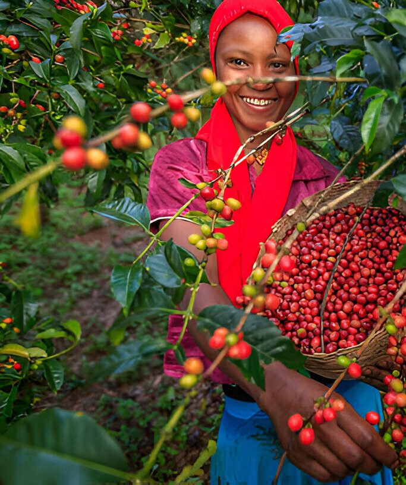

Farmer & cooperative support
Financial support, prompt payments and technical assistance help producers strengthen coffee quality and livelihoods.
The company
Nkoma Commodities Ltd is a Kampala-based agricultural commodities company focused on supporting, promoting and exporting coffee grown and processed in Uganda.

An agricultural commodities trading company with coffee as its primary focus.
We support, promote and export coffee grown and processed in Uganda. Nkoma works with farmers, cooperatives and farmer groups across the major coffee-growing regions, providing financial support, prompt payments and technical assistance.
Our work connects sourcing and processing with storage, quality control and export logistics.
How Nkoma works
Financial support, prompt payments and technical assistance help producers strengthen coffee quality and livelihoods.
Storage facilities help preserve quality and support supply throughout the year.
We encourage environmentally friendly cultivation and improved coffee-processing methods.
Our coffee services also include selected lots, roasting profiles, coffee machines, training and advice. Contact the team to discuss these services.